Best Vehicle Communication Gear for Overlanding 2026
As overlanding enthusiasts, we know how crucial it is to stay connected with our team and emergency services, especially when venturing into remote areas with limited cell coverage. We've spent months testing various vehicle communication gear, from budget-friendly options to premium systems, to bring you the best picks for 2026. Whether you're a solo adventurer or part of a large convoy, we've got you covered.
We've considered factors like range, clarity, durability, and ease of use to ensure our recommendations meet the highest standards. We've also taken into account the unique needs of overlanders, including the ability to withstand harsh environments and provide reliable communication in areas with limited infrastructure.

Midland MXT275 MicroMobile GMRS Radio
A cleanly integrated in-vehicle GMRS setup for convoy use and trail coordination.
Why We Like It
- Vehicle-mounted GMRS radio with an integrated control microphone
- Clean installation option for modern cabins with limited dash space
- Strong choice for convoy communication on trails and highways
Rugged Radios RH-5R Handheld Radio
A handheld backup radio for spotters, camp coordination, and short-range trail communication.
Why We Like It
- Handheld form factor for spotters, camp use, and vehicle-to-vehicle backups
- Popular in off-road and powersports communities
- Easy to keep charged and packed as a backup communication tool
Garmin inReach Mini 2 Satellite Communicator
A satellite communicator that fills the safety gap when radio and cell coverage disappear.
Why We Like It
- Satellite messaging and SOS coverage where cellular and radio networks are unavailable
- Important safety redundancy for remote desert, mountain, and forest routes
- Compact enough to carry outside the vehicle
BTECH GMRS-50V2 50W GMRS Mobile Radio
A higher-power GMRS mobile radio for drivers who want more range than handheld units.
Why We Like It
- Higher-output mobile GMRS option for longer convoy spacing
- Repeater-capable configuration for areas with GMRS repeater access
- Good fit for permanent vehicle installations
Midland MXT575 MicroMobile GMRS Radio
A premium in-vehicle GMRS system for teams that want more power and cleaner integration.
Why We Like It
- High-power GMRS radio designed for vehicle installation
- Integrated controls help reduce dashboard clutter
- Strong premium choice for serious overland convoy communication
We've tested these products in real-world scenarios, from casual trail runs to multi-day expeditions. We've run them for months, pushing their limits and evaluating their performance in various environments. Our picks are based on a combination of factors, including range, clarity, durability, and ease of use.
FAQ
What is the difference between GMRS and FRS frequencies?
GMRS (General Mobile Radio Service) and FRS (Family Radio Service) are two types of frequencies used for two-way communication. GMRS requires a license and offers more channels and longer range, while FRS is license-free and has a shorter range. We recommend using GMRS for overlanding, as it provides better range and clarity.
Do I need a license to use these radios?
It depends on the type of radio and frequency used. GMRS radios require a license from the FCC, while FRS radios do not. We recommend checking the specific requirements for your radio and frequency before use.
Can I use these radios for emergency communication?
Yes, these radios can be used for emergency communication, but it's essential to have a plan in place and know how to use them effectively. We recommend programming important channels, such as emergency services and NOAA weather radio, and keeping a list of contacts and frequencies handy.
Remember to always follow local regulations and best practices when using two-way radios for overlanding. For more information on our testing process and product recommendations, please visit our website.
Footer note: This article contains affiliate links, which means we earn a commission if you purchase through these links. This helps support our content creation and testing process. Thank you for your support!
Reader Reviews
Share your experience with this gear